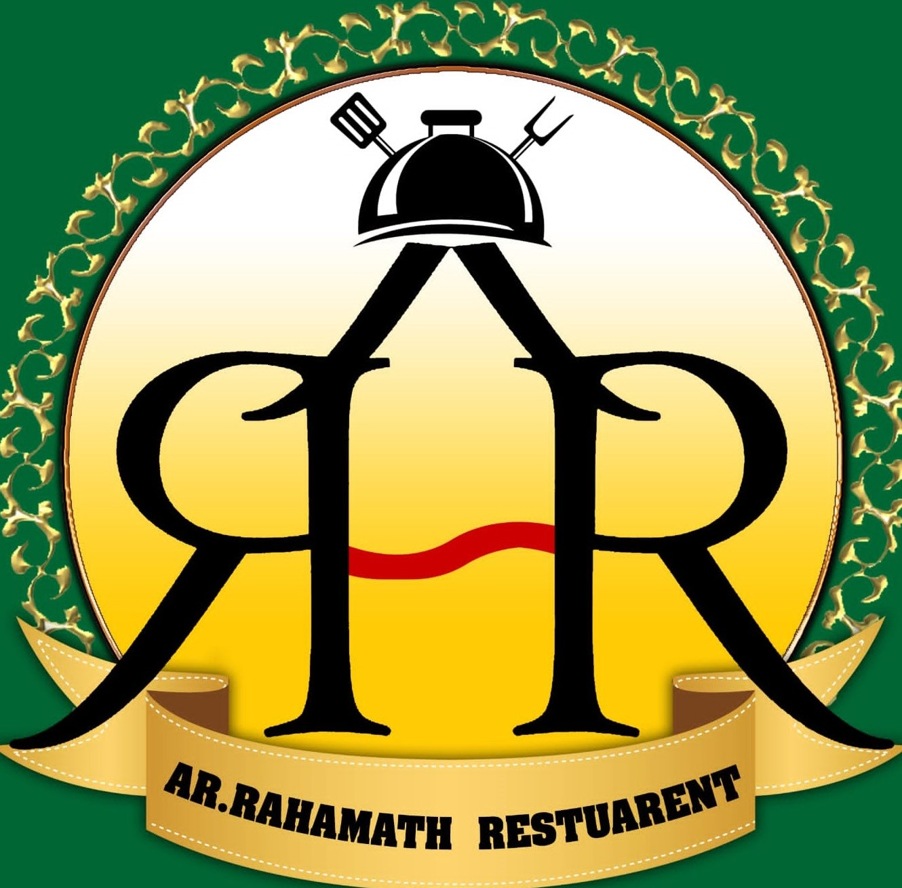

The restaurant is situated at 92RC+XFW, Labbaikudikadu to National Highway, Labbaikudikadu, Tamil Nadu 621108.
AR Rahmath Restaurant operates daily from 6:30 AM to 11:15 PM, providing breakfast, lunch, and dinner options to accommodate various dining preferences.
The restaurant boasts an impressive average rating of 4.5 out of 5 stars, based on 13 reviews, indicating a high level of customer satisfaction.
While specific menu details are not readily available online, the high ratings suggest a menu that resonates well with its customers.
For inquiries or reservations, you can visit the restaurant in person at the provided address.
Given its favorable reviews and convenient operating hours, AR Rahmath Restaurant appears to be a commendable dining choice in Labbaikudikadu.
Monday To Sunday:
5:30AM TO 11:00PM
Outdoor Catering Also Undertaken
BUS STAND,LABBAIKUDIKADU
PERAMBALUR
9944120073